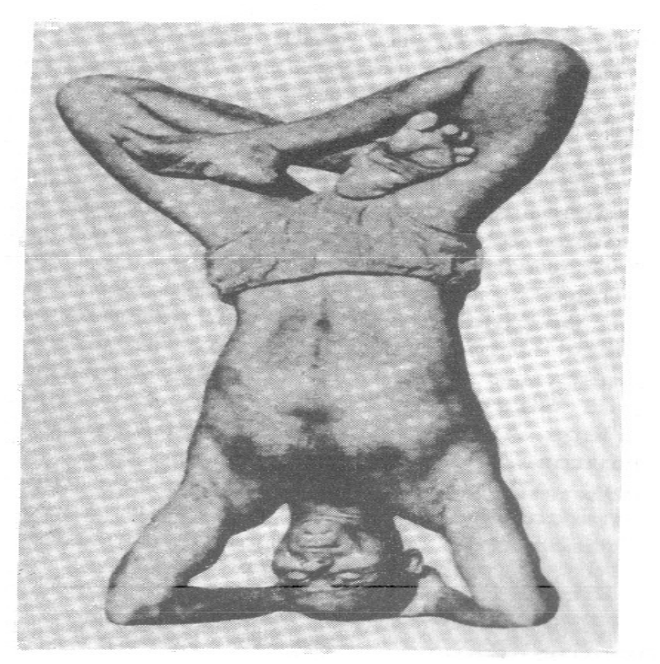
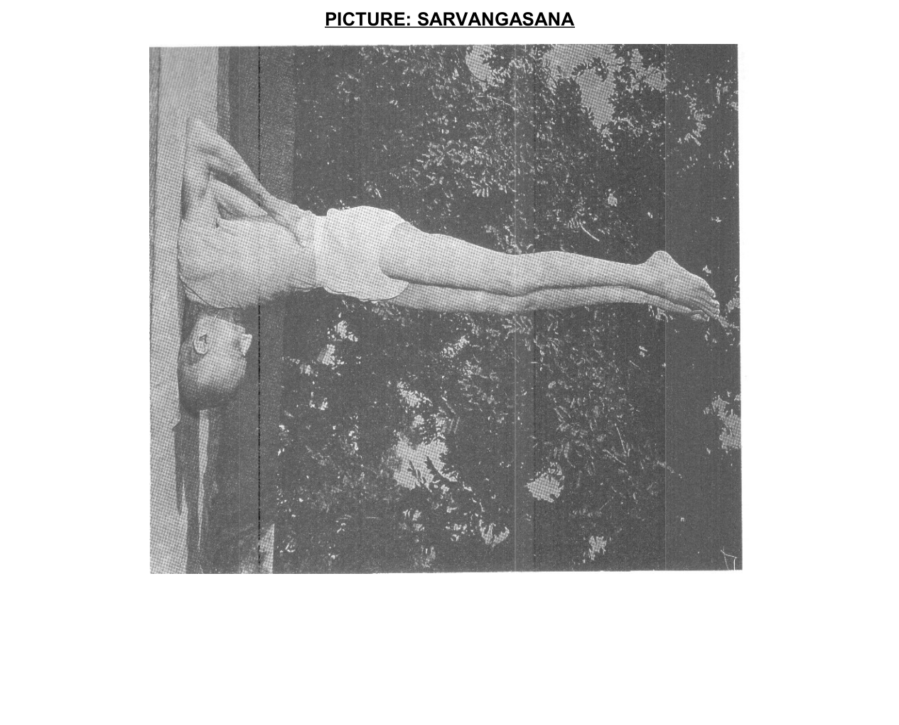
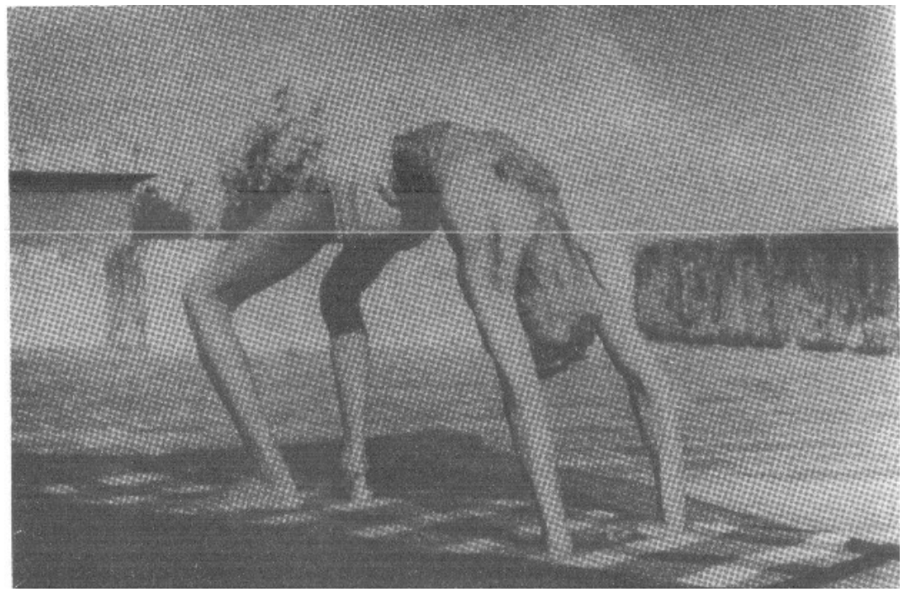
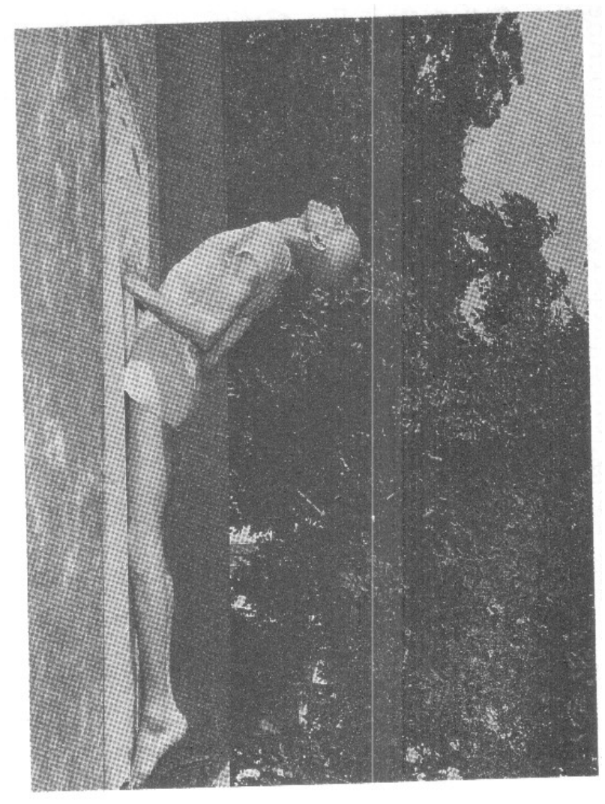
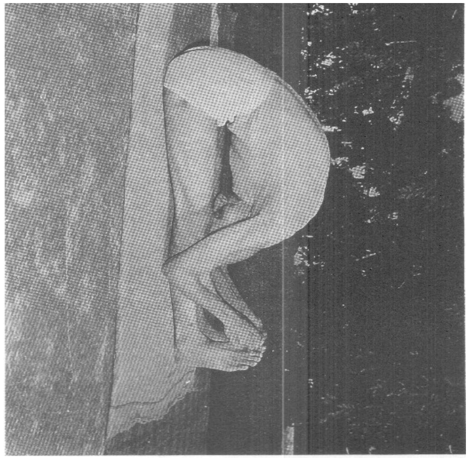
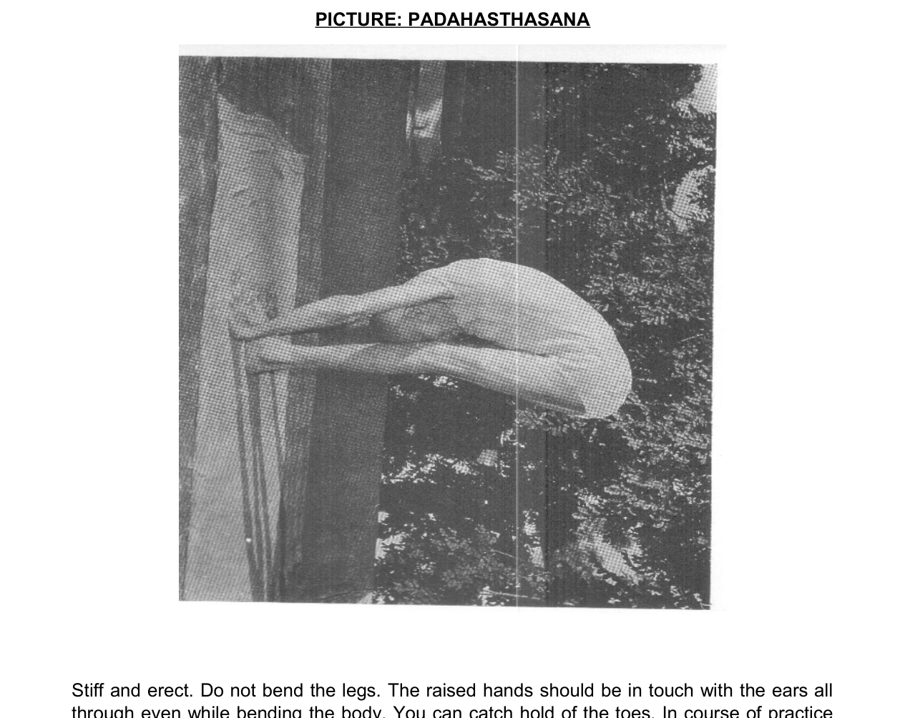
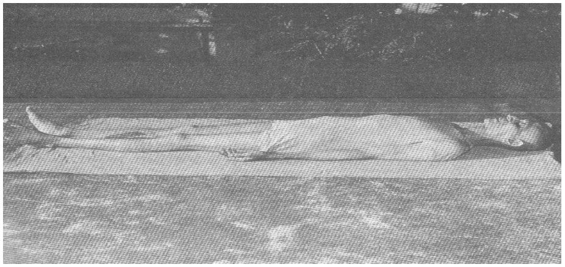

朝の修行
4:40 起床 ── 8:50 定時
「朝4時に起きよ。これは神の時間である」── 20の精神的指示 第1条 ／ 一オンスの実践は一トンの理論に勝る
起床 ── 神棚まで 4:40-5:00
| 4:40 | 神想起・水一杯 | 「雪津音稲荷大神様」と心の中で。数珠は枕の下から。冷水かぬるま水を一杯 |
| 4:45 | ジャパ108回 | 数珠・マーラで。意味と心構え（バーバ）「家と子らを守られる方」を抱いて心唱 |
| 4:55 | 用を足す・洗顔 | トイレ中も心唱可。排便は無理に強制しない。シャワーは夜（朝入浴は古典が避ける） |
| 4:58 | お供え交換 | 榊の水・米・水。手はお供え・心は御名 ── 手は仕事・心は神 |
聖典学習 タリーズにて 7:10-8:30
| ・ | 理解できる内容を優先 | 『ヨーガ 本質と実践』等・絵本制作メモ・菩薩行の学び。チャイ/コーヒー以外の飲み物 |
| ・ | 随時：回想のひとこと | 通勤の徒歩区間＝経行（歩行瞑想）。「行くときは行くことを知る」 |
昼休みの小座 ランチに5-10分
| ・ | 心唱108 | 目を閉じ・数珠はポケットの中。「休憩する男」にしか見えん。気を下げない本体 |
| ・ | 手は仕事・心は神 | 午後の席では数えずにただ続ける。言葉を制す ── 少なく・甘く・真実を |
夜の予告 詳細は夜の頁へ
| 21:30 | ゾーン進入 | 就寝ナッジ。22:40就寝と合わせて夜頁参照 |

頭立ち
10呼吸
壁可・降りたら直立数秒

ヨガ・ムドラー
10呼吸
後ろ合掌・前に倒れる

蓮華肩立ち
10呼吸
逆転の群

鋤
10呼吸
前屈の群

肩立ち
20呼吸〜
直後に必ず魚

魚
10呼吸
肩立ちの半分の時間

車輪
5呼吸×2
無理なら橋で代用

蛇
5呼吸×2
後屈の群

弓
5呼吸×2
後屈の群

長座の前屈
10呼吸
後屈の後の中和

手を足へ
10呼吸
立位前屈

半魚王のひねり
左右各10
捻りの群

屍のポーズ
20-30呼吸
必ず締め
呼吸法・瞑想 5:00-5:30 → 5:30-6:30
| 5:00 | アーサナ＋呼吸法 半時間 | 上の13ポーズ（全て鼻呼吸・keepは呼吸数）→ スクハ・プールヴァカ20回（最低・1:4:2・左右往復6工程で1回・クンバカ中ムーラ＋腹部の締め） |
| 5:30 | 瞑想60分・1回統合 | 祈りの句 → ジャパ続行 → 瞑想。東か北向き・蓮華または楽な座法で不動 |
| 6:30 | 犬の散歩 | ＝瞑想後の休止・散歩（原典規定）。トレーニングに数えない |
原典の定め 朝の鉄則
| ・ | 全て鼻呼吸 | 体調が悪ければ中止。1日も欠かさない |
| ・ | 汗は拭かず手ですり込む | 実技後30分入浴禁止・冷気に晒すな |
| ・ | 休止→着替え→出発 | 濡れた布は体を冷やす。暑い環境なら着替えず可 |
| ・ | 逆転系は夏は短く | 頭立ち30秒〜・疲れる前に降りる |